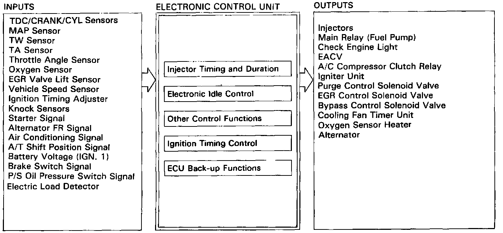

Description of On-Board Diagnostics

Injector Timing and Duration
The ECU contains memories for the basic discharge durations at various engine speeds and manifold pressures. The basic discharge duration, after being read out from the memory, is further modified by signals sent from various sensors to obtain the final discharge duration.
Electronic Air Control
Electronic Air Control Valve (EACV)
When the engine is cold, the A/C compressor is on, the transmission is in gear (A/T only) or the alternator is charging, the ECU controls current to the EACV to maintain correct idle speed.
Ignition Timing Control
The ECU contains memories for basic ignition timing at various engine speeds and manifold pressures. Ignition timing is also adjusted for coolant temperature.
A Knock Control System is also used. When detonation is detected by the knock sensors, the ignition timing is retarded.
Other Control Functions
1. Starting Control
When the engine is started, the ECU provides a rich mixture.
2. Fuel Pump Control
When the ignition switch is initially turned on, the ECU supplies ground to the main relay that supplies current to the fuel pump for two seconds to pressurize the fuel system.
When the engine is running, the ECU supplies ground to the main relay that supplies current to the fuel pump.
When the engine is not running and the ignition is on, the ECU cuts ground to the main relay which cuts current to the fuel pump.
3. Fuel Cut-off Control
During deceleration with the throttle valve closed, current to the injectors is cut off to improve fuel economy at speeds over 980 rpm (M/T) or 980 rpm (A/T).
Fuel cut-off action also takes place when engine speed exceeds, 7,100 rpm, regardless of the position of the throttle valve, to protect the engine from over-revving.
Fuel cut-off action also takes place when vehicle speed exceeds, 131 mph (210 km/h).
4. A/C Compressor Clutch Relay
When the ECU receives a demand for cooling from the air conditioning system (compressor control unit), it delays the compressor from being energized, and enriches the mixture to assure smooth transition to the A/C mode.
5. Purge Control Solenoid Valve
When the coolant temperature is below 65°C (149°F), the ECU supplies a ground to the purge control solenoid valve which cuts vacuum to the purge control valve.
6. Bypass Control Solenoid Valve (BPCSV)
When the engine rpm is below 4,900 rpm, the BPCSV is activated by a signal from the ECU, intake air flows through the long intake path, then high torque is delivered. At speeds higher than 4,900 rpm, the solenoid valve is deactivated by the ECU, and intake air flows through the short intake path in order to reduce the resistance in airflow.
7. EGR Control Solenoid Valve (EGR CSV)
When the EGR is required for control of oxides of nitrogen (NOx) emissions, the ECU supplies ground to the EGRCSV which supplies regulated vacuum to the EGR valve.
8. Alternator Control
The system controls the voltage generated at the alternator in accordance with the electric load and drive mode, and reduces the engine load to improve the fuel economy.
ECU Back-up Functions
1. Fail-Safe Function
When an abnormality occurs in a signal from a sensor, the ECU ignores that signal and assumes a pre-programmed value that allows the engine to continue to run.
2. Back-up Function
When an abnormality occurs in the ECU itself, the injectors are controlled by a back-up circuit independent of the system in order to permit minimal driving.
3. Self-diagnosis Function (Check Engine light)
When an abnormality occurs in a signal from a sensor, the ECU lights the Check Engine light and stores the failure code in erasable memory. When the ignition is initially turned on, the ECU supplies ground for the Check Engine light for two seconds.